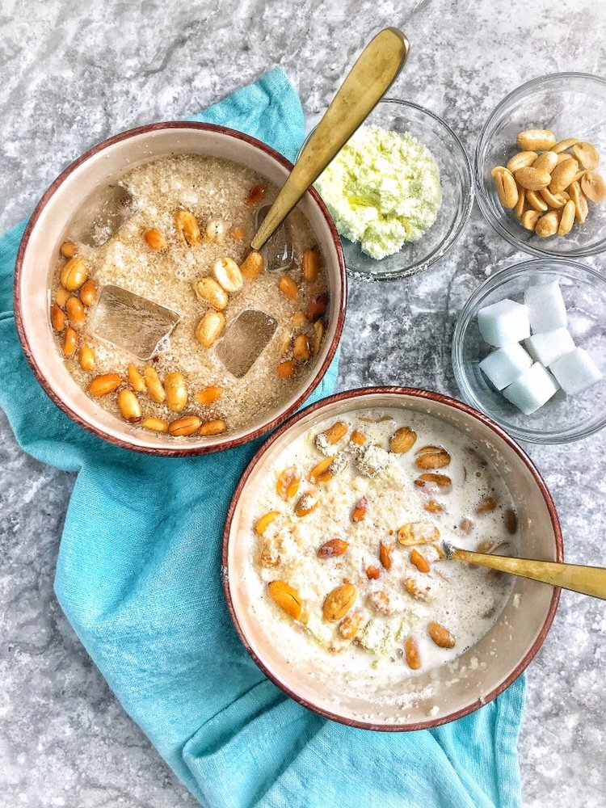

Garri and groundnut

Description
Garri is pan fried cassava flakes which is very popular in West Africa. Garri is usually eaten in 3 ways
Ingredients
- 1/4 cup Garri
- 3 cups water
3 cubes of sugar
2tbs powdered milk
pinch of salt
Toppings
- 1/4 roasted groundnut
- 1/4 cup coconut
Steps
- Pour water into the cereal bowl containing the dry Garri
- Sieve out any particle that floats
- Pour more fresh water into the Garri
- Then add sugar, pinch of salt (milk if using)
- Add the groundnuts or any other topping you prefer. Then relax and enjoy ?